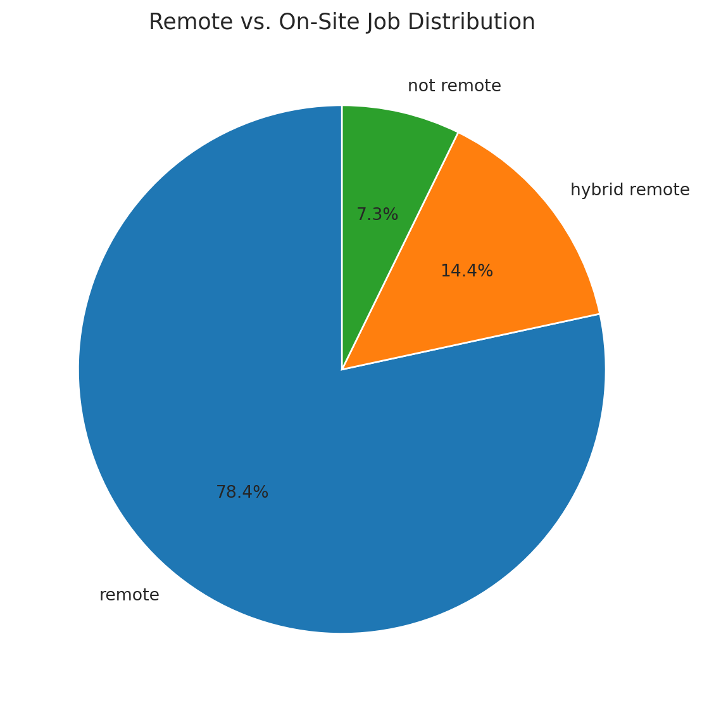
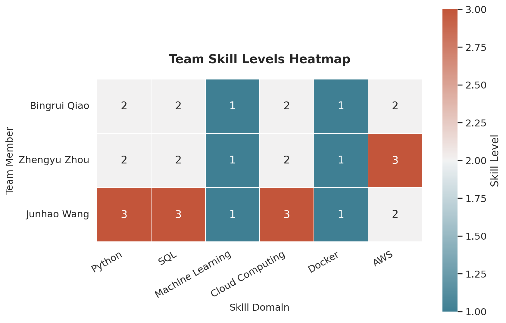
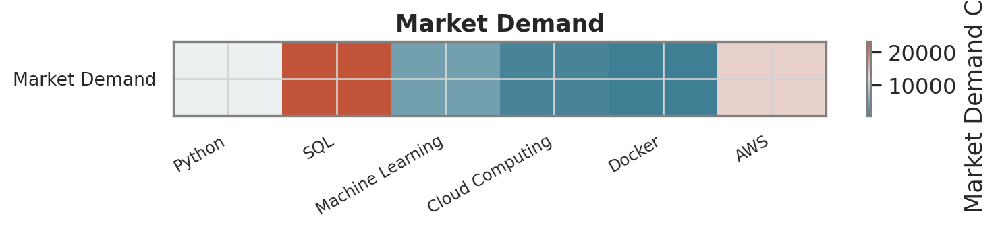
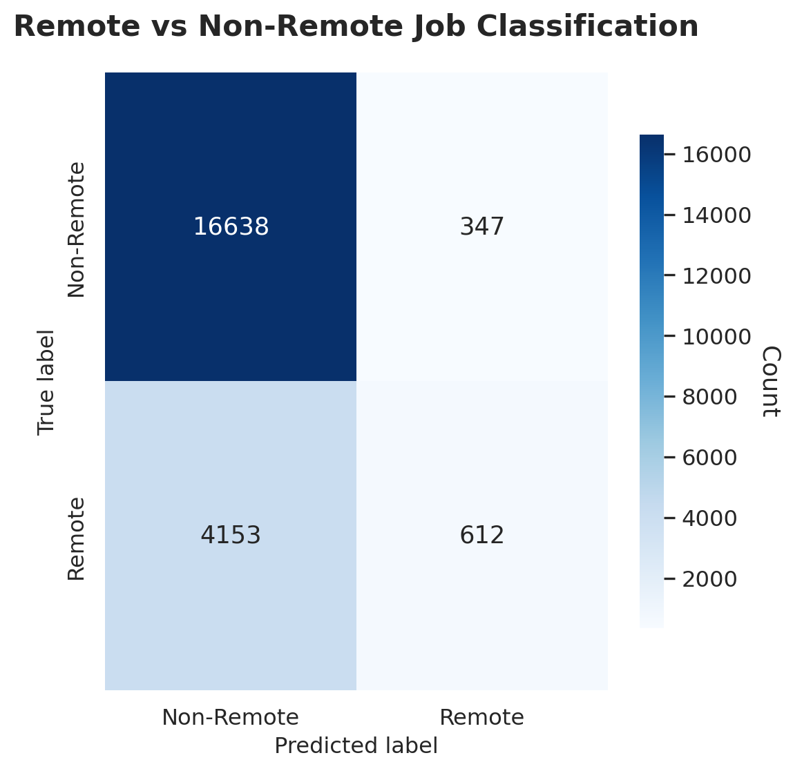
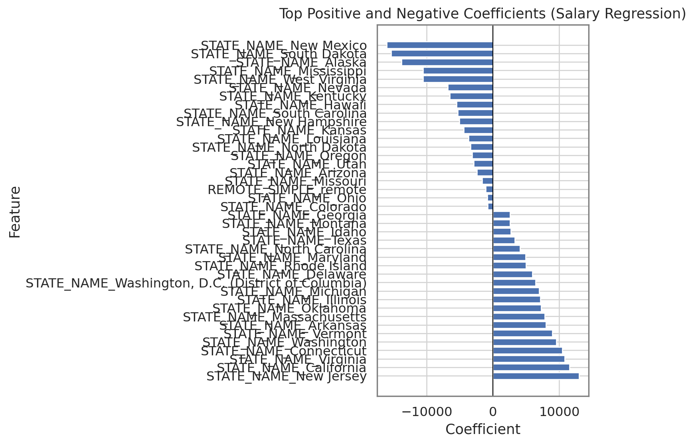
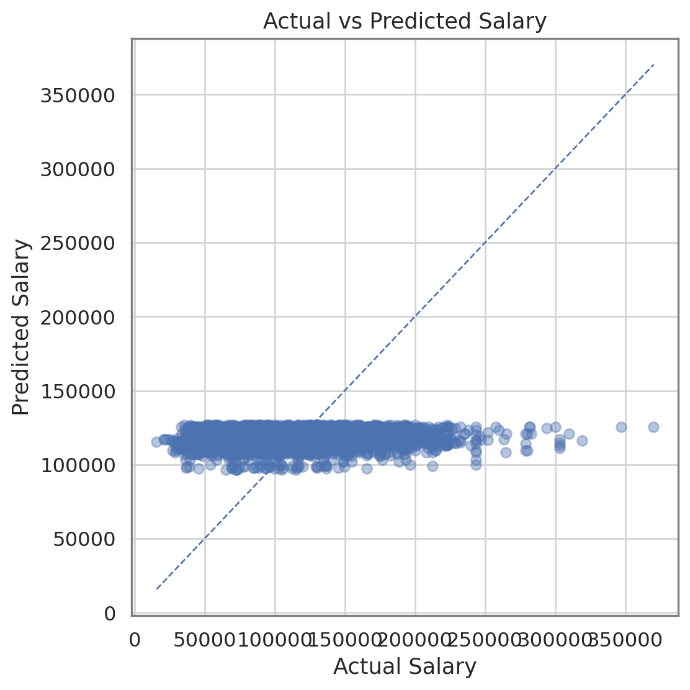

import os, datetime
os.makedirs("logs", exist_ok=True)
with open("logs/_ping.txt", "w", encoding="utf-8") as f:
f.write("hello @ " + str(datetime.datetime.now()) + "\n")
print("WROTE: logs/_ping.txt")Machine Learning Models for Geographic and Remote Work Analysis
KMeans Clustering, Salary Prediction, and Remote Work Classification
x
1 Introduction
2 Data Cleaning & Preprocessing
title: “Data Analysis” subtitle: “Comprehensive Data Cleaning & Exploratory Analysis” author: - name: “Bingrui Qiao” - name: “Zhengyu Zhou” - name: “Junhao Wang” affiliations: “Boston University” bibliography: references.bib csl: csl/econometrica.csl format: html: toc: true number-sections: true execute: echo: true eval: true freeze: false error: false cache: false enabled: !expr (os.getenv(“CI”, “false”) != “true”) jupyter: python3 —
2.1 Data Cleaning & Preprocessing
In this section, we clean the Lightcast dataset, log each step, and save a reproducible cleaned CSV for downstream EDA.
2.1.1 Setup & Load (clean version)
import os, datetime
import numpy as np
import pandas as pd
import matplotlib.pyplot as plt
import missingno as msno
import subprocess
import seaborn as sns
# Handle missingno (optional)
try:
import missingno as msno
HAS_MSNO = True
except ImportError:
HAS_MSNO = False
# Paths
DATA_PATH = "data/lightcast_job_postings.csv"
CLEAN_PATH = "data/cleaned_lightcast.csv"
LOG_PATH = "logs/cleaning_log.txt"
FIG_MISS = "figures/missing_values_heatmap.png"
# Ensure output dirs exist
os.makedirs("logs", exist_ok=True)
os.makedirs("figures", exist_ok=True)
# Logger
def log(msg: str):
print(msg)
with open(LOG_PATH, "a", encoding="utf-8") as f:
f.write(msg.rstrip() + "\n")
# Start a fresh log
with open(LOG_PATH, "w", encoding="utf-8") as f:
f.write("=== DATA CLEANING LOG START ===\n")
# Ping file (to confirm write permission)
with open("logs/_ping.txt", "w", encoding="utf-8") as f:
f.write("hello from python @ " + str(datetime.datetime.now()) + "\n")
# AUTO-DOWNLOAD IF MISSING
if not os.path.exists(DATA_PATH):
gdrive_url = "https://drive.google.com/uc?id=1V2GCHGt2dkFGqVBeoUFckU4IhUgk4ocQ"
try:
import gdown
gdown.download(gdrive_url, DATA_PATH, quiet=False)
except Exception as e:
raise FileNotFoundError(f"Could not download dataset.\nError: {e}")
# Load data
if not os.path.exists(DATA_PATH):
raise FileNotFoundError(f"Dataset not found at {DATA_PATH}. Check path & working dir.")
df = pd.read_csv(DATA_PATH, low_memory=False, on_bad_lines="skip")
log(f"Loaded dataset → rows: {len(df):,}, cols: {df.shape[1]}")2.1.2 Drop redundant/irrelevant columns
columns_to_drop = [
"ID","URL","ACTIVE_URLS","DUPLICATES","LAST_UPDATED_TIMESTAMP",
"NAICS2","NAICS3","NAICS4","NAICS5","NAICS6",
"SOC_2","SOC_3","SOC_5"
]
before_cols = df.shape[1]
df.drop(columns=columns_to_drop, inplace=True, errors="ignore")
after_cols = df.shape[1]
log(f"Dropped {before_cols - after_cols} columns; remaining columns: {after_cols}")
# Normalize names & basic types
df.columns = df.columns.str.strip().str.upper()
if "POSTED" in df.columns:
df["POSTED"] = pd.to_datetime(df["POSTED"], errors="coerce")
if "SALARY" in df.columns:
df["SALARY"] = pd.to_numeric(
df["SALARY"].astype(str).str.replace(r"[^0-9.-]", "", regex=True),
errors="coerce"
)2.1.3 Visualize & handle missing values
# --- Missing values correlation heatmap (like your classmate) ---
cols_with_na = [c for c in df.columns if df[c].isna().any()]
sub = df[cols_with_na]
if len(cols_with_na) >= 2:
if len(cols_with_na) > 25:
top_na_cols = sub.isna().mean().sort_values(ascending=False).head(25).index
sub = sub[top_na_cols]
na_corr = sub.isna().astype(int).corr()
mask = np.triu(np.ones_like(na_corr, dtype=bool))
plt.figure(figsize=(11, 8))
sns.heatmap(
na_corr, mask=mask, cmap="coolwarm", vmin=-1, vmax=1,
annot=True, fmt=".1f", linewidths=.5,
cbar_kws={"shrink": .8}
)
plt.title("Missing Values Correlation Heatmap", fontsize=14)
plt.xticks(rotation=45, ha="right", fontsize=8)
plt.yticks(rotation=0, fontsize=8)
plt.tight_layout()
FIG_MISS = "figures/missing_values_corr_heatmap.png"
plt.savefig(FIG_MISS, dpi=150)
plt.show()
else:
log("No columns with missing values; skipping heatmap.")
2.1.4 Remove duplicates
subset_cols = [c for c in ["TITLE","COMPANY","LOCATION","POSTED"] if c in df.columns]
before = len(df)
if subset_cols:
df.drop_duplicates(subset=subset_cols, keep="first", inplace=True)
after = len(df)
log(f"Removed duplicates by {subset_cols}: {before - after} rows dropped; remaining: {after}")2.1.5 Optional salary sanity filter
if "SALARY" in df.columns:
bad = (df["SALARY"] < 1) | (df["SALARY"] > 1_000_000)
n_bad = int(bad.sum())
if n_bad > 0:
df.loc[bad, "SALARY"] = np.nan
med2 = df["SALARY"].median()
df["SALARY"].fillna(med2, inplace=True)
log(f"Clipped extreme Salary ({n_bad} rows) and refilled with median {med2:.2f}")2.1.6 Save & summary
df.to_csv(CLEAN_PATH, index=False)
log(f"Saved cleaned dataset → {CLEAN_PATH}")
summary = f"Rows: {len(df):,}\nColumns: {df.shape[1]}\nSample columns: {list(df.columns)[:12]}"
print(summary)
log("✅ Cleaning pipeline finished successfully.")2.2 Exploratory Data Analysis (EDA)
Exploratory Data Analysis (EDA) allows us to identify patterns and distributions in the job market dataset.
In this section, we focus on three aspects: 1. Job postings by industry
2. Salary distributions
3. Remote vs. on-site job proportions
2.2.1 Job Postings by Industry
Understanding industry demand helps reveal which sectors are most active in hiring.
import pandas as pd
import matplotlib.pyplot as plt
import seaborn as sns
import os
# Load dataset
df = pd.read_csv("data/cleaned_lightcast.csv", low_memory=False)
# Ensure /figures directory exists
os.makedirs("figures", exist_ok=True)
# col
industry_col = "NAICS_2022_6_NAME"
# Clean up column names
df.columns = df.columns.str.strip()
#drop unclassified
df = df[~df["NAICS_2022_6_NAME"].str.lower().str.contains("unclassified", na=False)]
# Count top 10 industries
top_industries = df[industry_col].value_counts().head(10)
plt.figure(figsize=(10, 6))
sns.barplot(x=top_industries.values, y=top_industries.index, orient="h")
plt.title("Top 10 Industries by Job Postings")
plt.xlabel("Number of Job Postings")
plt.ylabel("Industry")
plt.tight_layout()
plt.savefig("figures/industry_postings.png", dpi=300)
plt.show()
A bar chart was chosen to visualize the number of job postings across different industries. This format makes it easy to compare industry demand and helps job seekers understand which sectors have the highest hiring activity.
Job demand is concentrated in tech and professional services: Custom Computer Programming Services leads, followed closely by Management Consulting, Employment Placement Agencies, and Computer Systems Design—each with ~4–5k postings. After these, volumes drop sharply to a second tier (Commercial Banking, CPA offices, Temporary Help, Health/Medical Insurance, Other Computer Services, Colleges/Universities) at ~1.3–2.0k. The prominence of staffing/placement agencies signals broad, economy-wide hiring, while the tech-heavy top ranks highlight sustained demand for digital and knowledge-worker skills.
2.2.2 Salary Distribution by Industry
import os
import pandas as pd
import matplotlib.pyplot as plt
import seaborn as sns
os.makedirs("figures", exist_ok=True)
df = pd.read_csv("data/cleaned_lightcast.csv", low_memory=False)
# Define column names
industry_col = "NAICS_2022_6_NAME"
salary_col = "SALARY"
# Filter and clean salary
df = df[df[salary_col] > 0]
#df = df[~df[industry_col].str.lower().str.contains("unclassified")]
# Select top 10 industries by posting count
top10 = df[industry_col].value_counts().head(10).index
df_top10 = df[df[industry_col].isin(top10)]
# --- Boxplot Visualization ---
palette = sns.color_palette("Spectral", n_colors=10)
plt.figure(figsize=(12, 8))
sns.boxplot(
data=df_top10,
y=industry_col,
x=salary_col,
palette=palette,
showfliers=True, # show outliers
linewidth=1.2
)
# Add title & labels
plt.title("Salary Distribution by Industry (Top 10 Industries)", fontsize=18, weight="bold")
plt.xlabel("Salary (USD)", fontsize=14)
plt.ylabel("Industry", fontsize=14)
# Light grid background like example
sns.set_style("whitegrid")
plt.grid(axis="x", linestyle="--", alpha=0.3)
plt.tight_layout()
# Save figure
plt.savefig("figures/salary_distribution_by_industry_top10.png", dpi=300, bbox_inches="tight")
plt.show()/tmp/ipykernel_3756/926866885.py:27: FutureWarning:
Passing `palette` without assigning `hue` is deprecated and will be removed in v0.14.0. Assign the `y` variable to `hue` and set `legend=False` for the same effect.

Use a box chart to show the salary distribution of each major recruitment industry. Unlike bar charts, bar charts only show averages, while box charts can reveal the median, fluctuation range and abnormal values in each industry. This helps job seekers not only understand which industries have higher average salaries, but also the extent of salary fluctuations and the areas with the greatest potential for salary growth.
In various industries, some knowledge-intensive and service-intensive fields (such as unclassified industries and customized computer programming services) have relatively high salary levels and are more dispersed. The median salary in these areas is relatively high, and the upper tail is long, which indicates that there are a large number of highly paid positions. Management consulting, computer system design, and direct health and medical insurance industries also show a large range of remuneration, reflecting the wide range of remuneration within these professions. In contrast, industries such as colleges and universities, certified public accountants, commercial banks and software publishers have a tighter scope and fewer extreme outliers, indicating that the remuneration range of these industries is more standardized and there is less room for improvement at the top of the salary distribution.
2.2.3 Remote vs. On-Site Jobs
import os
import pandas as pd
import matplotlib.pyplot as plt
import seaborn as sns
os.makedirs("figures", exist_ok=True)
df = pd.read_csv("data/cleaned_lightcast.csv", low_memory=False)
# Clean the REMOTE_TYPE_NAME column
df["REMOTE_TYPE_NAME"] = (
df["REMOTE_TYPE_NAME"]
.astype(str).str.strip().str.lower()
.replace({"[none]": None, "none": None, "unknown": None, "nan": None, "na": None, "null": None, "": None})
)
# Count each type
remote_counts = df["REMOTE_TYPE_NAME"].value_counts()
# Visual
plt.figure(figsize=(6, 6))
plt.pie(
remote_counts.values,
labels=remote_counts.index,
autopct="%1.1f%%",
startangle=90,
wedgeprops={"edgecolor": "white"}
)
plt.title("Remote vs. On-Site Job Distribution", fontsize=13)
plt.tight_layout()
plt.savefig("figures/remote_vs_onsite.png", dpi=300, bbox_inches="tight")
plt.show()
A pie chart was selected to display the proportions of job types (remote, hybrid, and on-site). This format offers an intuitive visual summary, helping job seekers understand the flexibility of job opportunities in 2024.
The job market here is overwhelmingly remote: nearly four out of five postings (78.4%) are fully remote, while another 14.4% offer hybrid options. Only 7.3% require full on-site work. This mix signals strong employer flexibility and broad access to roles regardless of location, with hybrid emerging as a meaningful—but secondary—model. For candidates, remote-first skills (self-management, async collaboration) are likely at a premium, while fully on-site opportunities are comparatively scarce.
3 Skill Gap Analysis
4 Create a team-based skill dataframe
import pandas as pd
skills_data = {
"Name": ["Bingrui Qiao", "Zhengyu Zhou", "Junhao Wang"],
"Python": [2, 2, 3],
"SQL": [2, 2, 3],
"Machine Learning": [1, 1, 1],
"Cloud Computing": [2, 2, 3],
"Docker": [1, 1, 1],
"AWS": [2, 3, 2]
}
df_skills = pd.DataFrame(skills_data)
df_skills.set_index("Name", inplace=True)
df_skills| Python | SQL | Machine Learning | Cloud Computing | Docker | AWS | |
|---|---|---|---|---|---|---|
| Name | ||||||
| Bingrui Qiao | 2 | 2 | 1 | 2 | 1 | 2 |
| Zhengyu Zhou | 2 | 2 | 1 | 2 | 1 | 3 |
| Junhao Wang | 3 | 3 | 1 | 3 | 1 | 2 |
5 Visualizing Skill Gaps
import seaborn as sns
import matplotlib.pyplot as plt
#visual
sns.set_theme(style="whitegrid", font_scale=1.1, rc={
"axes.facecolor": "white",
"figure.facecolor": "white",
"axes.edgecolor": "gray",
"grid.color": "lightgray"
})
# Color choice
cmap = sns.diverging_palette(220, 20, as_cmap=True)
# visual
plt.figure(figsize=(9, 6))
ax = sns.heatmap(
df_skills,
annot=True,
fmt=".0f",
cmap=cmap,
linewidths=0.7,
cbar_kws={'label': 'Skill Level'},
square=True
)
# Title
plt.title("Team Skill Levels Heatmap", fontsize=15, weight="bold", pad=20)
plt.xlabel("Skill Domain", fontsize=12)
plt.ylabel("Team Member", fontsize=12)
# layout
plt.xticks(rotation=30, ha="right")
plt.yticks(rotation=0)
plt.tight_layout()
#save
plt.savefig("figures/Skill_Gap_Analysis.png", dpi=300, bbox_inches="tight")
plt.show()
6 Compare skill
# Load data
df = pd.read_csv("data/cleaned_lightcast.csv")
# Count keyword occurrences
top_skills = df_skills.columns.tolist()
job_text = df["BODY"].fillna("")
skill_counts = {s: job_text.str.contains(s, case=False).sum() for s in top_skills}
# Append demand row
df_skills.loc["Market Demand"] = [skill_counts[s] for s in top_skills]
df_skills| Python | SQL | Machine Learning | Cloud Computing | Docker | AWS | |
|---|---|---|---|---|---|---|
| Name | ||||||
| Bingrui Qiao | 2 | 2 | 1 | 2 | 1 | 2 |
| Zhengyu Zhou | 2 | 2 | 1 | 2 | 1 | 3 |
| Junhao Wang | 3 | 3 | 1 | 3 | 1 | 2 |
| Market Demand | 11782 | 23202 | 3972 | 1302 | 688 | 14243 |
7 Visual heatmap
import seaborn as sns
import matplotlib.pyplot as plt
# Same style
sns.set_theme(style="whitegrid", font_scale=1.1, rc={
"axes.facecolor": "white",
"figure.facecolor": "white",
"axes.edgecolor": "gray",
"grid.color": "lightgray"
})
cmap = sns.diverging_palette(220, 20, as_cmap=True)
# Team Skill Levels
plt.figure(figsize=(8, 2.5))
plt.imshow(df_skills.iloc[:-1], aspect="auto", cmap=cmap)
plt.colorbar(label="Skill Level (1–5)")
plt.yticks(range(len(df_skills.index)-1), df_skills.index[:-1], fontsize=10)
plt.xticks(range(len(df_skills.columns)), df_skills.columns, rotation=30, ha="right", fontsize=9)
plt.title("Team Skill Levels", fontsize=13, weight="bold")
plt.tight_layout()
plt.savefig("figures/Team_Skill_Level.png", dpi=300, bbox_inches="tight")
plt.show()
# Market Demand Heatmap
plt.figure(figsize=(8, 2))
plt.imshow([df_skills.loc["Market Demand"]], aspect="auto", cmap=cmap)
plt.colorbar(label="Market Demand Count")
plt.yticks([0], ["Market Demand"], fontsize=10)
plt.xticks(range(len(df_skills.columns)), df_skills.columns, rotation=30, ha="right", fontsize=9)
plt.title("Market Demand", fontsize=13, weight="bold")
plt.tight_layout()
plt.savefig("figures/Market_Demand.png", dpi=300, bbox_inches="tight")
plt.show()

8 Machine Learning Models
9 Classification: Remote vs Non-Remote Jobs
import pandas as pd
import matplotlib.pyplot as plt
import seaborn as sns
from sklearn.model_selection import train_test_split
from sklearn.preprocessing import OneHotEncoder
from sklearn.compose import ColumnTransformer
from sklearn.pipeline import Pipeline
from sklearn.linear_model import LogisticRegression
from sklearn.metrics import (
confusion_matrix,
accuracy_score,
classification_report
)
# 1. Load the ORIGINAL Lightcast dataset
# (we do NOT use the cleaned subset here, because it only contains Remote jobs)
raw_path = "data/lightcast_job_postings.csv"
df_raw = pd.read_csv(raw_path, low_memory=False)
# 2. Clean the REMOTE_TYPE_NAME column
df_raw["REMOTE_TYPE_NAME"] = (
df_raw["REMOTE_TYPE_NAME"]
.astype(str)
.str.strip()
)
print("Raw REMOTE_TYPE_NAME distribution (top 10):")
print(df_raw["REMOTE_TYPE_NAME"].value_counts(dropna=False).head(10))
# 3. Create a binary label: IS_REMOTE (1 = Remote-related, 0 = Non-Remote)
df_raw["IS_REMOTE"] = df_raw["REMOTE_TYPE_NAME"].str.contains(
"remote", case=False, na=False
).astype(int)
print("\nIS_REMOTE value counts:")
print(df_raw["IS_REMOTE"].value_counts())
# If the data still has only one class, stop early to avoid model errors
if df_raw["IS_REMOTE"].nunique() < 2:
raise ValueError(
"The dataset currently contains only one class for IS_REMOTE. "
"Classification is not possible with a single class."
)
# 4. Select features (structured, geography + industry)
feature_cols = ["NAICS_2022_6_NAME", "STATE_NAME"]
for col in feature_cols:
df_raw[col] = df_raw[col].astype(str).str.strip()
X = df_raw[feature_cols]
y = df_raw["IS_REMOTE"] # 0 = Non-Remote, 1 = Remote
# 5. Train/Test split (stratify to keep class balance)
X_train, X_test, y_train, y_test = train_test_split(
X,
y,
test_size=0.3,
random_state=42,
stratify=y
)
# 6. Preprocessing + Logistic Regression pipeline
preprocess = ColumnTransformer(
transformers=[
("cat", OneHotEncoder(handle_unknown="ignore"), feature_cols)
]
)
clf = Pipeline(steps=[
("prep", preprocess),
("logreg", LogisticRegression(max_iter=300))
])
# 7. Fit the model
clf.fit(X_train, y_train)
# 8. Predictions and evaluation metrics
y_pred = clf.predict(X_test)
print(f"\nAccuracy (Remote vs Non-Remote): {accuracy_score(y_test, y_pred):.3f}\n")
print("Classification report:\n")
print(classification_report(
y_test,
y_pred,
target_names=["Non-Remote", "Remote"]
))
# 9. Confusion matrix plot (for the report)
cm = confusion_matrix(y_test, y_pred)
fig, ax = plt.subplots(figsize=(6, 6))
# Heatmap
sns.heatmap(
cm,
annot=True,
fmt="d",
cmap="Blues",
cbar=True,
cbar_kws={"shrink": 0.8},
xticklabels=["Non-Remote", "Remote"],
yticklabels=["Non-Remote", "Remote"],
ax=ax
)
# Set the title and coordinate axes
ax.set_title("Remote vs Non-Remote Job Classification", fontsize=16, weight="bold", pad=20)
ax.set_xlabel("Predicted label", fontsize=12)
ax.set_ylabel("True label", fontsize=12)
# Set the colorbar label
cbar = ax.collections[0].colorbar
cbar.set_label("Count", rotation=270, labelpad=15)
# layout
fig.tight_layout()
plt.savefig("figures/remote_confusion_matrix.png", dpi=300, bbox_inches="tight")
plt.show()Raw REMOTE_TYPE_NAME distribution (top 10):
REMOTE_TYPE_NAME
[None] 56570
Remote 12497
Hybrid Remote 2260
Not Remote 1127
nan 44
Name: count, dtype: int64
IS_REMOTE value counts:
IS_REMOTE
0 56614
1 15884
Name: count, dtype: int64
Accuracy (Remote vs Non-Remote): 0.793
Classification report:
precision recall f1-score support
Non-Remote 0.80 0.98 0.88 16985
Remote 0.64 0.13 0.21 4765
accuracy 0.79 21750
macro avg 0.72 0.55 0.55 21750
weighted avg 0.76 0.79 0.73 21750

This classifier can accurately identify most non-remote positions, but has difficulties in handling remote positions: many truly remote positions are wrongly classified as non-remote positions, indicating that merely relying on location and industry characteristics is not sufficient to capture the patterns suitable for remote work.
10 Salary Regression: Impact of Geography and Remote Work
In this section, we use a multiple linear regression model to predict job salary based on geographic location (state) and remote work type. This directly supports our topic of Geographic and Remote Work Analysis by quantifying how location and remote flexibility influence pay.
import os
import pandas as pd
import numpy as np
from sklearn.model_selection import train_test_split
from sklearn.linear_model import LinearRegression
from sklearn.metrics import mean_squared_error, r2_score
# 1. Load cleaned dataset
DATA_PATH = "data/cleaned_lightcast.csv"
df = pd.read_csv(DATA_PATH, low_memory=False)
print(f"Loaded rows: {len(df):,}, columns: {df.shape[1]}")
# 2. Choose columns for the regression model
# Try to find a state column
if "STATE_NAME" in df.columns:
state_col = "STATE_NAME"
elif "STATE" in df.columns:
state_col = "STATE"
else:
raise ValueError("No state column found. Please check your dataset (STATE or STATE_NAME).")
remote_col = "REMOTE_TYPE_NAME"
salary_col = "SALARY"
# 3. Basic cleaning: keep only useful columns and drop missing values
df_reg = df[[salary_col, state_col, remote_col]].copy()
# Clean remote type text
df_reg[remote_col] = (
df_reg[remote_col]
.astype(str)
.str.strip()
.str.lower()
)
# Filter valid salary
df_reg = df_reg[df_reg[salary_col] > 0].dropna()
print(f"After filtering: {len(df_reg):,} rows")
# Optional: sample to speed up rendering
if len(df_reg) > 20000:
df_reg = df_reg.sample(n=20000, random_state=42)
print(f"Sampled to 20,000 rows for faster modeling.")
# 4. Simplify remote type into three buckets
def map_remote(x: str) -> str:
if "remote" in x:
return "remote"
if "hybrid" in x:
return "hybrid"
return "onsite"
df_reg["REMOTE_SIMPLE"] = df_reg[remote_col].apply(map_remote)
# 5. One-hot encode categorical variables
model_df = df_reg[[salary_col, state_col, "REMOTE_SIMPLE"]].copy()
model_df = pd.get_dummies(
model_df,
columns=[state_col, "REMOTE_SIMPLE"],
drop_first=True
)
X = model_df.drop(salary_col, axis=1)
y = model_df[salary_col]
print(f"Final feature columns: {X.shape[1]}")
# 6. Train/test split (80/20)
X_train, X_test, y_train, y_test = train_test_split(
X, y, test_size=0.2, random_state=42
)
# 7. Fit multiple linear regression
reg = LinearRegression()
reg.fit(X_train, y_train)
y_pred = reg.predict(X_test)
# 8. Evaluation metrics: RMSE & R²
rmse = np.sqrt(mean_squared_error(y_test, y_pred))
r2 = r2_score(y_test, y_pred)
print(f"RMSE: {rmse:,.2f}")
print(f"R²: {r2:,.3f}")Loaded rows: 69,198, columns: 118
After filtering: 29,236 rows
Sampled to 20,000 rows for faster modeling.
Final feature columns: 51
RMSE: 44,719.60
R²: 0.010# 9. Coefficients as feature importance
coef_df = (
pd.DataFrame({
"feature": X.columns,
"coefficient": reg.coef_
})
.sort_values("coefficient", ascending=False)
)
print(coef_df.head(10)) feature coefficient
28 STATE_NAME_New Jersey 12969.254218
3 STATE_NAME_California 11557.354780
44 STATE_NAME_Virginia 10826.522370
5 STATE_NAME_Connecticut 10448.354346
45 STATE_NAME_Washington 9536.253167
43 STATE_NAME_Vermont 8935.467412
2 STATE_NAME_Arkansas 7968.991975
19 STATE_NAME_Massachusetts 7815.791150
34 STATE_NAME_Oklahoma 7273.144350
11 STATE_NAME_Illinois 7132.022318# 10. Plot feature importance (top 20 coefficients) with Matplotlib
top_n = 20
#top20
top_coef = pd.concat([
coef_df.head(top_n),
coef_df.tail(top_n)
])
plt.figure(figsize=(8, 6))
plt.barh(top_coef["feature"], top_coef["coefficient"])
plt.axvline(0, color="black", linewidth=0.8)
plt.title("Top Positive and Negative Coefficients (Salary Regression)")
plt.xlabel("Coefficient")
plt.ylabel("Feature")
plt.tight_layout()
# save png
plt.savefig("figures/feature_importance.png", dpi=300, bbox_inches="tight")
plt.show()
10.1 Feature Importance Analysis

Figure: Top Positive and Negative Coefficients — This plot highlights the features that most strongly influence predicted salary levels. Positive coefficients indicate factors associated with higher predicted salaries, while negative coefficients indicate factors associated with lower predicted salaries.
The regression model shows that geographic differences play the largest role. States like Washington, D.C., California, and New York have strong positive coefficients, while states such as West Virginia and South Dakota show large negative coefficients. Remote/hybrid indicators have smaller effects relative to geography.
# 11. Actual vs Predicted salary scatter plot (Matplotlib)
scatter_df = pd.DataFrame({
"Actual Salary": y_test,
"Predicted Salary": y_pred
})
plt.figure(figsize=(6, 6))
plt.scatter(
scatter_df["Actual Salary"],
scatter_df["Predicted Salary"],
alpha=0.4
)
# drave
min_val = min(scatter_df["Actual Salary"].min(), scatter_df["Predicted Salary"].min())
max_val = max(scatter_df["Actual Salary"].max(), scatter_df["Predicted Salary"].max())
plt.plot([min_val, max_val], [min_val, max_val], linestyle="--", linewidth=1)
plt.title("Actual vs Predicted Salary")
plt.xlabel("Actual Salary")
plt.ylabel("Predicted Salary")
plt.tight_layout()
# save PNG
plt.savefig("figures/actual_vs_predicted.png", dpi=300, bbox_inches="tight")
plt.show()
10.2 Actual vs Predicted Salary

Figure: Actual vs Predicted Salary — Scatter plot comparing true salary with model predictions. The dashed line represents perfect prediction (y = x).
The prediction pattern shows that the model captures general salary trends, but underestimates extremely high salaries and compresses the overall range. This behavior is consistent with a moderate R² score and suggests that additional job-related variables (e.g., experience level, seniority) would improve model accuracy.